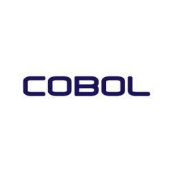
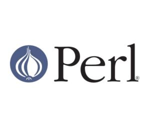
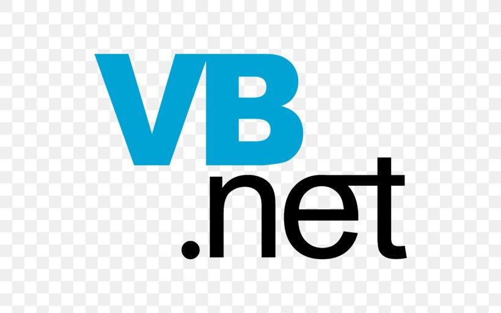

|
FORTRAN (conceito) |
1954–55 |
Time liderado por John W. Backus/IBM |
|
LISP (conceito) |
1956–58 |
John McCarthy |
|
FORTRAN I (implementação) |
1957 |
John W. Backus/IBM |
|  |
COBOL (conceito) |
1959 |
Comitê CODASYL |
|
LISP (implementação) |
1959 |
John McCarthy |
|
COBOL 61 (implementação) |
1960 |
Comitê CODASYL |
|
APL (conceito) |
1962 |
Kenneth E. Iverson |
|
APL (implementação) |
1966 |
Kenneth E. Iverson |
 |
Pascal |
1970 |
Niklaus Wirth, Kathleen Jensen |
 |
C |
1972 |
Dennis Ritchie |
 |
Structured Query language (SQL) |
1972 |
IBM |
 |
SAS |
1976 |
Instituto SAS |
|
MATLAB |
1978? |
Cleve Moler na Universidade do Novo México |
|
Objective-C |
1983 |
Brad Cox |
 |
C++ |
1983 |
Bjarne Stroustrup |
|
CLIPPER |
1984 |
Nantucket |
|  |
Perl |
1987 |
Larry Wall |
 |
Haskell |
1990 |
|
 |
HTML |
1991 |
Tim Berners-Lee |
 |
Python |
1991 |
Guido van Rossum |
|
Visual Basic |
1991 |
Alan Cooper, vendido para Microsoft |
|
Brainfuck |
1993 |
Urban Müller |
|
Lua |
1993 |
Roberto Ierusalimschy et al./Tecgraf, PUC-Rio |
 |
R |
1993 |
Robert Gentleman e Ross Ihaka |
|
Borland Delphi |
1995 |
Anders Hejlsberg/Borland |
 |
Java |
1995 |
James Gosling/Sun Microsystems |
 |
PHP |
1995 |
Rasmus Lerdorf |
 |
Ruby |
1995 |
Yukihiro Matsumoto |
 |
JavaScript |
1995 |
Brendan Eich/Netscape |
|
CSS |
1996 |
Håkon Wium Lie e Bert Bos |
|
VBScript |
1996 |
Microsoft |
 |
ECMAScript |
1997 |
ECMA TC39-TG1 |
 |
ActionScript |
1998 |
Gary Grossman |
|
Game Maker Language (GML) |
1999 |
Mark Overmars |
 |
C# |
2000 |
Anders Hejlsberg, Microsoft (ECMA) |
|  |
Visual Basic .NET |
2001 |
Microsoft |
|
GDScript (GDS) |
2001 |
Juan Linietsky, Ariel Manzur (OKAM Studio) |
|
Scratch |
2002 |
Mitchel Resnick, John Maloney, Natalie Rusk, Evelyn Eastmond, Tammy Stern, Amon Millner, Jay Silver,
e Brian Silverman |
 |
Scala |
2003 |
Martin Odersky |
 |
Groovy |
2004 |
James Strachan |
 |
F# |
2005 |
Don Syme, Microsoft Research |
 |
Clojure |
2007 |
Rich Hickey |
 |
Nim |
2008 |
Andreas Rumpf |
 |
Go |
2009 |
Google |
 |
Rust |
2010 |
Graydon Hoare, Mozilla |
 |
Dart |
2011 |
Google |
 |
Kotlin |
2011 |
JetBrains |
 |
Elixir |
2012 |
José Valim |
|
Elm |
2012 |
Evan Czaplicki |
 |
TypeScript |
2012 |
Anders Hejlsberg, Microsoft |
|
Julia |
2012 |
Jeff Bezanson, Stefan Karpinski, Viral Shah, Alan Edelman, MIT |
|
Swift |
2014 |
Apple Inc. |
 |
Solidity |
2014 |
Gavin Wood, Ethereum |
|
Zig |
2015 |
Andrew Kelley |
 |
Carbon |
2022 |
Google |